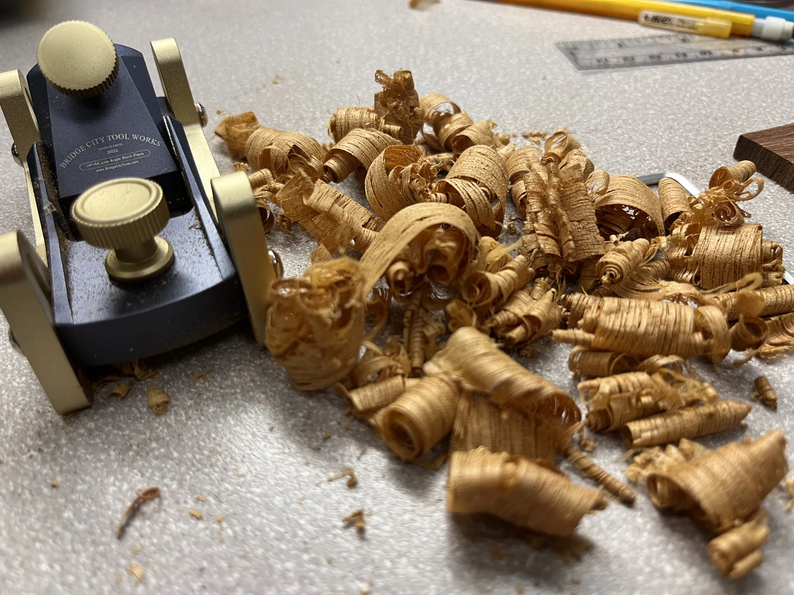

Instrument
InstrumentThe cream electric
01A 1956-inspired build. Cream, maple, and chrome.

Independent by hand.
Wood, wire, a good idea. Then the shaping, fitting, testing, and small adjustments that make an instrument your own.
My main showcase: guitar builds, component work, and experiments from the bench.
@moonandpearl.lutherie
M&P / INSTRUMENT STUDYShape. Fit. Adjust. Repeat as needed.
01 / Instruments & studies
Finished instruments and a closer look at what goes into them. From a familiar body shape to an unexpected bit of color.
02 / A closer look
A clean surface. A carefully placed dot. A fingerboard held evenly while the glue sets. The work keeps getting smaller as the instrument comes together.
A hand plane and a bench full of shavings. Material comes away a little at a time.

03 / Shop notes
Tools, little fixes, and the occasional questionable idea. Notes from the process, including the parts that take another try.
Watch more on InstagramReverse-coiling binding inside a roll of tape to straighten it.
Binding / Shop note Useful scraps02Acrylic offcuts become router bases, templates, and jigs.
Fixtures / Shop note Trial & adjustment03A fair question from a shop that makes some of its own tools.
Experiments / Shop note
04 / The shop
Moon & Pearl is Justin Benson’s small, veteran-owned lutherie workshop in Los Angeles. Handmade guitars, repairs, fretwork, and plenty of time spent finding a better way to hold a very small thing.
The process is part of the work: making a jig, trying a tool, adjusting the fit, and coming back for another pass.
05 / Bring it to the bench
A build idea, a guitar that needs attention, or a question about the work. Tell me about the instrument and what you have in mind.